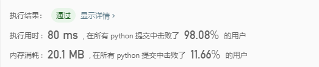

合并K个排序链表
合并 k 个排序链表，返回合并后的排序链表。请分析和描述算法的复杂度。
示例:
输入:
[
1->4->5,
1->3->4,
2->6
]
输出: 1->1->2->3->4->4->5->6
题解
- 每两两合并，最后得到一个长链表。两两合并查看（../链表/21. 合并两个有序链表.md）。
时间复杂度：O(n)
空间复杂度：O(1)
```python # Definition for singly-linked list. # class ListNode(object): # def init(self, x): # self.val = x # self.next = None
class Solution(object): def mergeKLists(self, lists): """ :type lists: List[ListNode] :rtype: ListNode """ # 时间复杂度：O(n) # 空间复杂度：O(1) if not lists: return None
for i in range(len(lists)-1):
l1 = lists[i]
lists[i+1] = self.mergeTwoLists(l1, lists[i+1])
return lists[-1]
def mergeTwoLists(self, l1, l2):
"""
:type l1: ListNode
:type l2: ListNode
:rtype: ListNode
"""
# 两个指针，a，b分别遍历l1, l2
# 比较a,b所指节点的元素值, 较小的元素存入新链表
# 然后把较小元素的指针往后移
# 重复上述操作，直到某个链表遍历结束，另一个链表剩余的元素保存到新的链表中。
a, b = l1, l2
dummy = ListNode(0)
cur = dummy
while a and b:
if a.val < b.val:
cur.next = a
a = a.next
else:
cur.next = b
b = b.next
cur = cur.next
if not a:
cur.next = b
else:
cur.next = a
return dummy.next
```
- 遍历所有的链表，把所有的元素存到一个数组里，排序，再生成一个新的链表。
时间复杂度：O(nlgn)
遍历所有的值需花费 O(N)O(N) 的时间。
一个稳定的排序算法花费 O(N\log N)O(NlogN) 的时间。
遍历同时创建新的有序链表花费 O(N)O(N) 的时间。
空间复杂度：O(n) # 多了用于保存所有元素的列表
排序花费 O(N)O(N) 空间（这取决于你选择的算法）。
创建一个新的链表花费 O(N)O(N) 的空间。
```python # Definition for singly-linked list. # class ListNode(object): # def init(self, x): # self.val = x # self.next = None
class Solution(object): def mergeKLists(self, lists): """ :type lists: List[ListNode] :rtype: ListNode """ nums = [] for l in lists: nums += self.iter_l(l)
nums = sorted(nums)
# 生成新的链表
dummy = ListNode(0)
cur = dummy
for n in nums:
cur.next = ListNode(n)
cur = cur.next
return dummy.next
@staticmethod
def iter_l(l):
'''遍历链表，返回所有元素的节点'''
nums = []
while l:
nums.append(l.val)
l = l.next
return nums
```

-
优先队列，暂时没学到，跳过。
-
堆，暂时没学到，跳过。